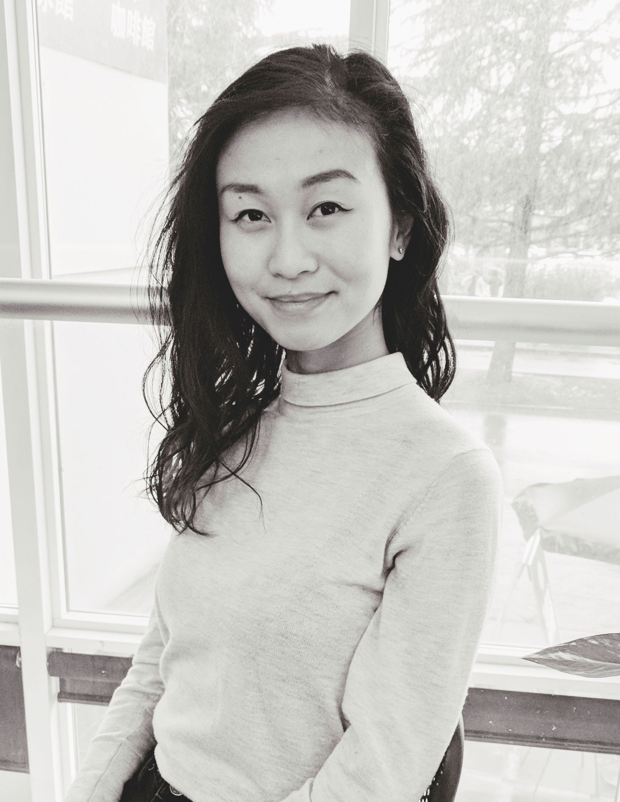

Hello there,
I'm Sarah

I’m a UX designer with a background in Marketing. As a creative and business problem solver, I seek to create joyful, yet impactful digital solutions to bring value to users and results for businesses. Striving to be the bridge that connects both user and business, I engage in projects with a passion for graphic design, interface design, and marketing communications, as well as with an enthusiastic, self-initiating work ethic.
Between design bouts, I’m on an endless search for photo-worthy food and recipes. It’s become serious business that I even have a motto for it: “the camera always eats first”. If you don’t mind my dining style, join me on my next food adventure and get to know me best over food: